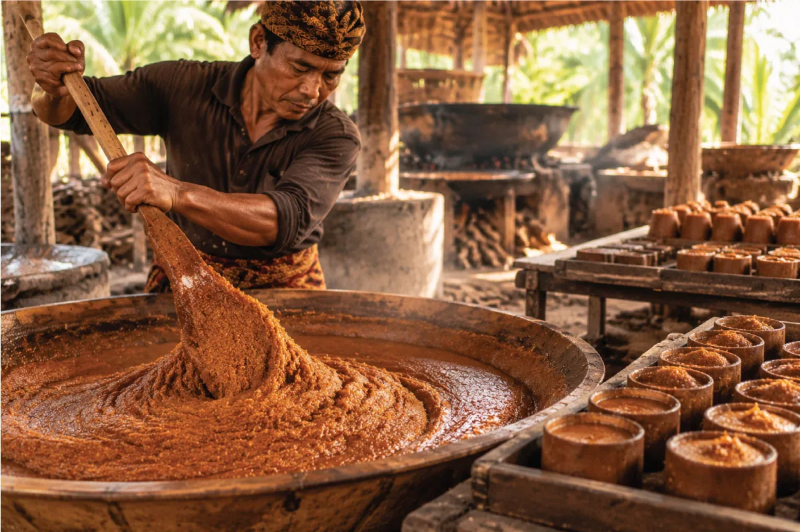

OUR PROCESS / 04
Pengkristalan Gula ArenPalm Sugar Crystallisation
Dari gula aren cair menjadi butiran kristal yang praktis.From liquid palm sugar to convenient crystal granules.

Setelah melalui proses pemasakan, gula aren berada dalam kondisi yang lebih pekat dan kemudian memasuki tahap pengkristalan.After cooking, the palm sugar becomes more concentrated and is ready for the crystallisation stage.
Pada tahap ini, gula aren diproses hingga berubah menjadi butiran kristal dengan karakter yang khas. Proses dilakukan secara terkontrol dengan tetap memperhatikan kebersihan dan kualitas produk.At this stage, the palm sugar is processed into distinctive crystal granules. The process is carefully controlled, with close attention to hygiene and product quality.
Perubahan dari gula aren cair menjadi kristal merupakan salah satu tahap penting dalam perjalanan produk. Di sinilah hasil dari nira pilihan dan proses pengolahan sebelumnya diwujudkan menjadi bentuk gula aren yang lebih praktis.Transforming liquid palm sugar into crystals is an important part of the product journey. Here, selected palm nectar and the care taken in earlier stages become a practical form of palm sugar.
Setiap butiran membawa karakter yang terbentuk dari perjalanan panjang sejak nira dipanen hingga melalui proses pengolahan.Every granule carries the character shaped by the journey from harvesting the nectar through each stage of processing.
Dalam bentuk kristal, gula aren menjadi lebih mudah digunakan untuk berbagai kebutuhan, mulai dari minuman, kopi, teh, baking, dessert, hingga kebutuhan kuliner dan bisnis.In crystal form, palm sugar is easy to use in a wide range of applications, from beverages, coffee, and tea to baking, desserts, food service, and business needs.
Bentuk kristal membuat gula aren lebih mudah ditakar, disimpan, dan digunakan dalam berbagai kreasi.The crystal form makes palm sugar easier to measure, store, and use in a variety of creations.
Setelah proses pengkristalan selesai, gula aren dipersiapkan untuk memasuki tahap akhir, yaitu pengemasan, sebelum akhirnya siap digunakan dan diterima oleh konsumen.Once crystallisation is complete, the palm sugar moves to the final stage—packaging—before it is ready for use and reaches consumers.